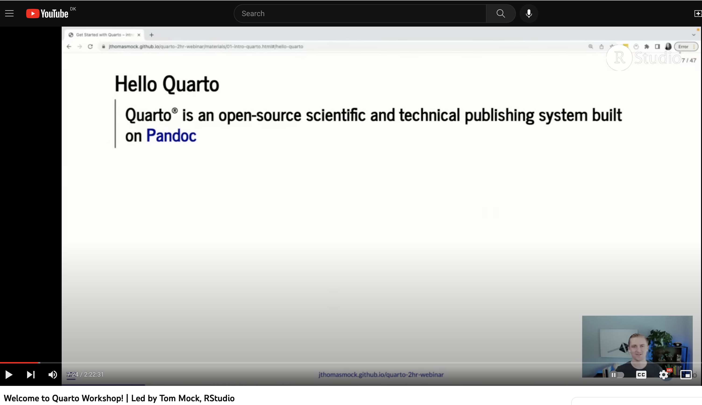
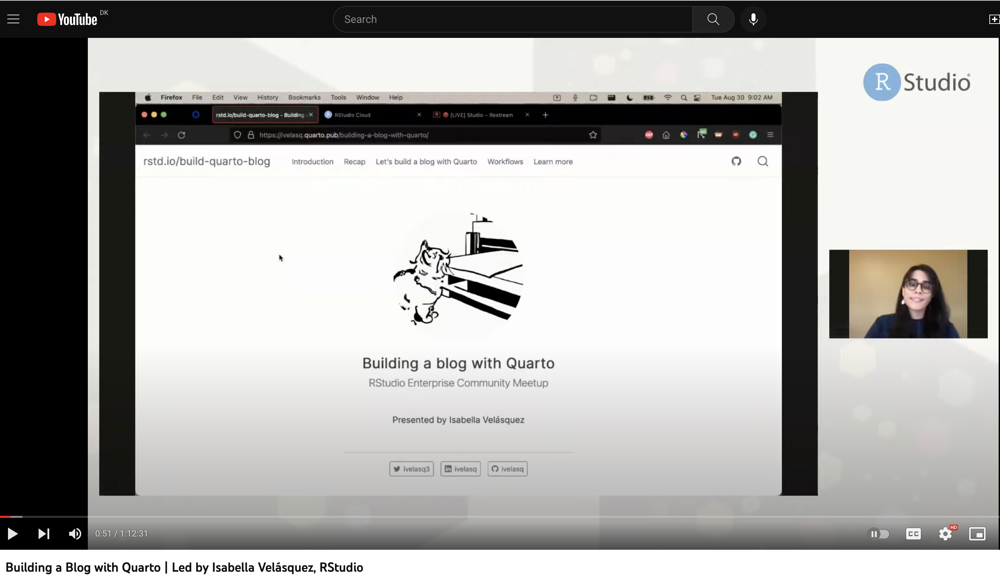
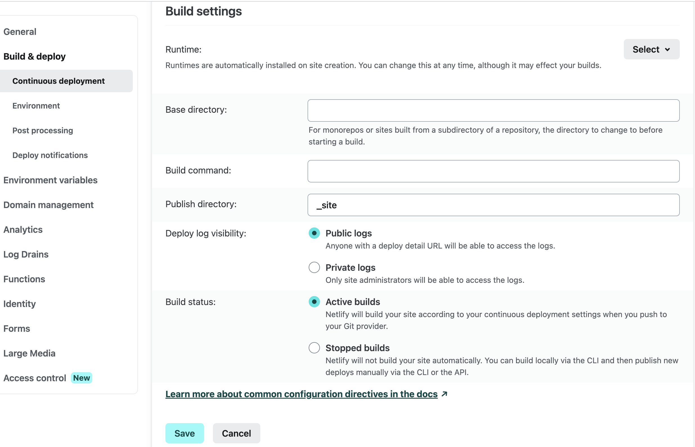
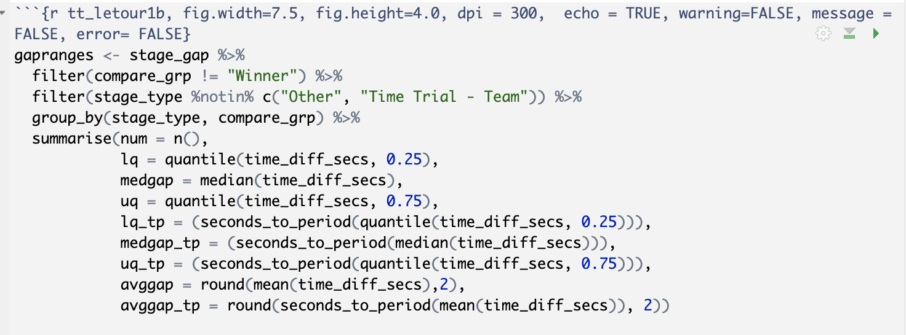
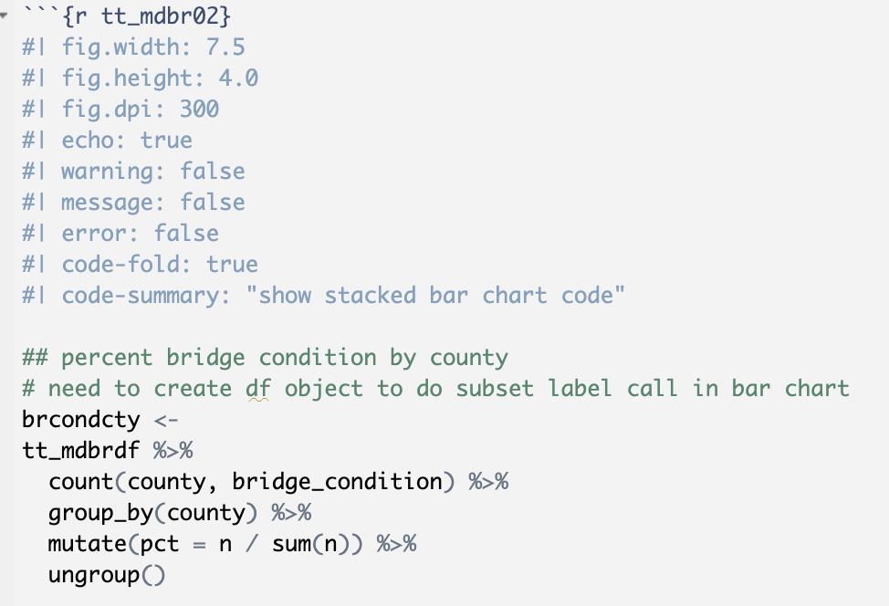
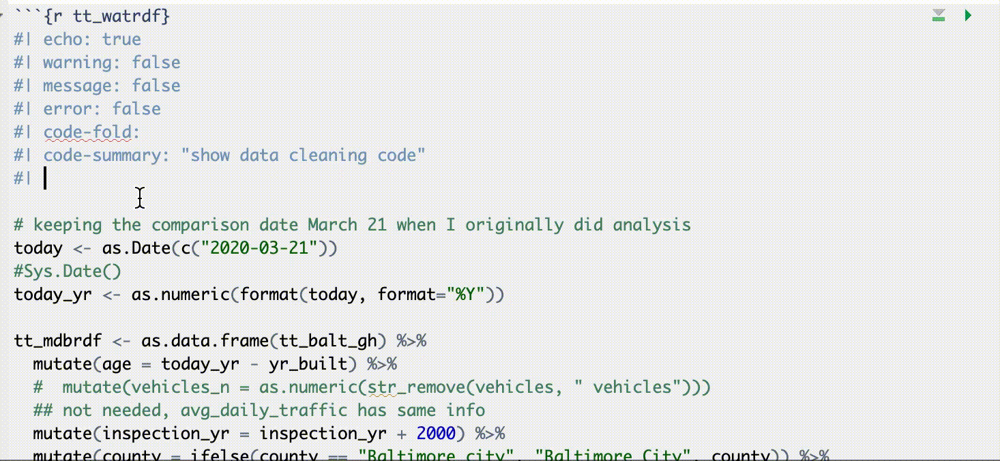

As I mentioned in the Migration and Resurrection post, some issues with my old Hugo build and Netlify playing nicely with Hugo & Wowchemy led to me deciding to rebuild things in Quarto. I was thinking about it anyway, as Quarto seems robust and even more user-friendly (to me) than blogdown & rmarkdown, which I still love. I just love Quarto more.
The basic idea of the blog remains the same - present the code & analysis for topics that interest me. While switching from SAS to r, I learned so much from reading tons of data blogs and watching how-to videos that I wanted to give back to the rstats community by showing and explaining my work. It also helps me as my own reference for code and approach to visualization when I forget how I did a pivot-long or cleaned and set-up data to work well with the visualization I wanted to do.
I decided to set some ground rules for the old posts:
Minimal text edits…only for typos and occasional clunky language.
But no editing the code. The projects I posted showed where I was in using r at the time. Though to be honest, if anything I’ve regressed a bit as I haven’t used r that much since I left my last data job. Besides, the rmarkdown -> quarto migration already entailed enough editing in the YAML and code chunk headers.
The only exception to the code edit rule was changing the chunk options to the #| syntax and adding code-fold options to some code chunks. It wasn’t easily doable in blogdown & Hugo when I first launched the site but it’s a native functionality to Quarto, so hoorah!
Repost the projects with date-stamps from the original posting. I want this to still accurately document my own data analysis/data science progression, even with that long gap between posts.
So how did I do it?
First I spent a sunny weekend afternoon in May watching two presentations about Quarto.
This Welcome to Quarto Workshop from August 2022 led by Thomas Mock.


After that it was Isabella Velásquez’s presentation on building a blog with Quarto.
I also read the extensive Quarto documentation.
Each of their personal blogs are nicely done in Quarto so I’ll also be poking around their github repos.
As I had already working with blogdown & rmarkdown, the transition to Quarto was smooth. Minor grammatical differences in the YAML and code chunks, but nothing that didn’t make sense.
Setting up the blog is as simple as starting any new project in r. Just go to: File -> New Project -> New Directory -> Quarto blog and fill in the name and directory location.
After setting up the basic design using one of the packaged themes and drafting the landing and About pages, I pushed the new files to github and hoped that Netlify would play nicely and render the new site.
On the first commit, which wiped out all of my old content and replaced with the new files, Netlify did its thing but I got the dreaded Error 404, site not found. With a little digging I found out that I had to go the Build & Deploy -> Continuous Deployment -> Build Settings section and add _site to the Publish Directory box like this:

Did that, did another git commit and voila, up and running.
Next step was to spend a sunny Sunday afternoon redoing my old rmd files to qmd, and navigating the differences in YAML and code chunk options.


I also like the intelligent completion bits in Quarto 
and using ctrl + space to see all the parameters for the option you’re setting.
quick aside…used veed.io for convert a screen-capture movie to animated gif…quick and easy
Going forward I’ll probably tweak the design now and then as I learn a bit more customization and functionality in Quarto and learn CSS and other styling tools for things like wrapping text around images and other tweaks and enhancements. But for now the site looks good and it’s time to get back to adding new data posts.
This post was last updated on 2023-05-18